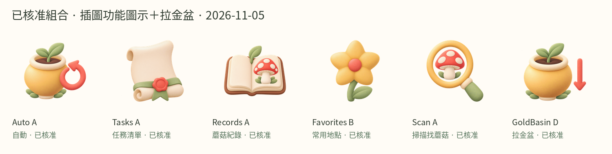

已核准組合 · Auto A／Tasks A／Records A／Favorites B／Scan A
GoldBasin沿用D。2026-11-05；PNG視覺已核准，未實機驗證。草地為模擬背景。

map · 40dp圓／20dp圖示
map · 40dp圓／24dp圖示
grass · 40dp圓／20dp圖示
grass · 40dp圓／24dp圖示
Claude交接
·
核准與SHA-256